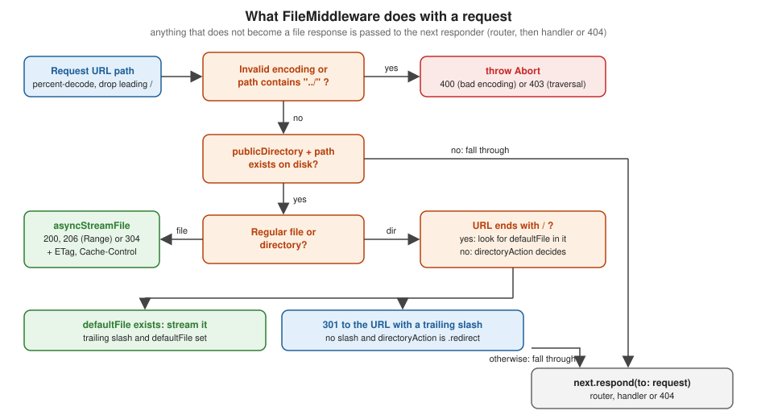

Static Files and File I/O
|
This content was generated with the assistance of AI and should be verified against the official documentation before being relied on in production. |
This page is written against Vapor 4.122.2 on Swift 6.4 (the package builds in the Swift 6 language mode with tools
version 6.3, as the official template does; Vapor 4.122.2 itself needs tools version 6.0), with swift-nio 2.104.0,
checked on 2026-10-17. Every Swift listing on this page was compiled in the Swift 6 language mode with zero warnings in
a scratch package, and the behaviour described was verified by running the service and calling it with curl; the
output shown is captured from those runs. The page extends the Bookshelf service of the earlier pages of this section.
Vapor 5 is at 5.0.0-beta.4 and is not released yet; what happens to these APIs there is described in the last section,
where req.fileio loses its read and write methods. Swift itself is covered by the
Swift Reference, and async functions and Sendable by
Async/Await and Tasks and
Actors, Isolation and Sendable. The
Middleware page explains the chain FileMiddleware plugs into, and
Request and Response the Response and body types used here.
Two jobs: serving files and doing file I/O
Vapor touches the file system in two different ways, and they use different APIs:
| Job | API | Typical use |
|---|---|---|
Serve files that ship with the application unchanged |
|
CSS, JavaScript, images, fonts, a single-page application build, |
Read or write files from inside a route handler |
|
Download endpoints, generated exports, reading a template or a data file, saving a small upload |
Find the right directory |
|
Locate |
Both are built on SwiftNIO’s non-blocking file I/O: reads and writes run off the event loop on a thread pool, so a slow
disk does not stall unrelated requests. The Vapor 4.122 implementation uses NIOFileSystem (the underscored
_NIOFileSystem module) for the asynchronous API, which is why the API is async and the older future-returning
methods are deprecated.
The working directory and app.directory
app.directory is a DirectoryConfiguration. Created by DirectoryConfiguration.detect() when the application starts,
it takes the process’s current working directory (getcwd) and derives the others from it:
| Property | Value (working directory /app) |
Used by |
|---|---|---|
|
|
everything else |
|
|
|
|
|
your own data files, templates |
|
|
Leaf (see the Leaf page of this section) |
All four are plain String values that end in /, and all are var, so they can be changed in configure:
app.directory = DirectoryConfiguration(workingDirectory: "/srv/bookshelf")
// or change one directory only
app.directory.publicDirectory = "/srv/bookshelf/static/"The detail that causes most of the "works in Xcode, not in production" reports: the directories are computed from where
the process was started, not from where the executable lives. swift run and .build/debug/App serve started in the
package root find Public/ next to Package.swift. Xcode starts the app in DerivedData, so the scheme needs a custom
working directory (Edit Scheme, Run, Options, "Use custom working directory"); Vapor logs a warning when it detects the
DerivedData path under Xcode. A systemd unit needs WorkingDirectory=, and a container needs WORKDIR (or the
files copied next to the executable, as shown in the Docker section and in
Deployment with Docker). Resources bundled with SwiftPM
(resources: [.process(...)]) live in a <package>_<target>.resources bundle next to the executable and are read
with Bundle.module, not through app.directory. A writable data directory for req.fileio belongs in configuration;
see Configuration and Environment.
FileMiddleware and the Public directory
FileMiddleware is an AsyncMiddleware that maps the request path onto a file below a public directory and, when the
file exists, answers with the file instead of calling the rest of the chain. The official template does not register
it (an API service has nothing to serve); you add it in configure when the service also serves assets.
The initializer
// Vapor 4.122.2, signature of the main initializer
public init(
publicDirectory: String,
defaultFile: String? = nil,
directoryAction: DirectoryAction = .none,
advancedETagComparison: Bool = false,
cachePolicy: CachePolicy = .browserDefault
)| Parameter | Meaning |
|---|---|
|
The directory files are served from. A trailing slash is added if missing. Pass |
|
File served when the request is for a directory (a URL ending in |
|
What to do when the URL names a directory but has no trailing slash. |
|
|
|
A |
There is also a init(bundle:publicDirectory:defaultFile:directoryAction:cachePolicy:) that serves a Public folder
copied into an app bundle, for servers embedded in an Xcode project; it throws BundleSetupError when the bundle has no
resource URL or no such folder.
What happens to a request

The steps in respond(to:chainingTo:) (Vapor 4.122.2, Sources/Vapor/Middleware/FileMiddleware.swift) are:
-
The path is percent-decoded. Invalid encoding throws
Abort(.badRequest). -
Leading slashes are removed, and a path that contains
../throwsAbort(.forbidden). Because decoding happens first,..%2fand%2e%2e/are caught too (verified below). -
The absolute path is
publicDirectoryplus the request path. If nothing exists there, the request goes tonext.respond, so a missing file is not a 404 from the middleware: the router gets the chance to handle it, and an unknown route yields the normal not-found error. -
If it is a regular file, it is streamed with
req.fileio.asyncStreamFile, whatever the HTTP method, and the cache policy is applied. -
If it is a directory and the URL ends in
/, thedefaultFile(if any) is streamed when it exists. -
If it is a directory and the URL has no trailing slash,
.redirectanswers301; otherwise the request goes to the next responder.
Two consequences follow from step 3. A file under Public/ shadows a route with the same path, since the middleware
runs before the router. And FileMiddleware is a GET-style server only in practice: nothing in it checks the method, so
HEAD, POST and the rest are answered with the file too. Put method-specific rules in an outer middleware if the
distinction matters.
Registering it
import Vapor
func configure(_ app: Application) async throws {
// L1: serve Public/ with defaults
app.middleware.use(ImmutableAssetsMiddleware(prefix: "/assets/"))
app.middleware.use(FileMiddleware(
publicDirectory: app.directory.publicDirectory,
defaultFile: "index.html",
directoryAction: .redirect,
advancedETagComparison: false,
cachePolicy: .cacheUpToDuration(.minutes(5))
))
app.middleware.use(SPAFallbackMiddleware(publicDirectory: app.directory.publicDirectory))
try routes(app)
}The registration order matters (the first middleware registered is the outermost one):
ImmutableAssetsMiddleware wraps the file middleware so it can adjust the response on the way out, and
SPAFallbackMiddleware sits inside it so it only sees requests no file satisfied. Both are shown in the next sections.
RouteLoggingMiddleware and ErrorMiddleware are already registered ahead of all three by default.
Result of calling the service with Public/ containing index.html, docs/index.html and
assets/app.3f9a1c.js:
$ curl -I localhost:8080/
HTTP/1.1 200 OK
last-modified: Sat, 17 Oct 2026 14:43:23 GMT
etag: "1792248203-19"
accept-ranges: bytes
content-type: text/html; charset=utf-8
content-length: 19
cache-control: max-age=300
age: 0
$ curl -I localhost:8080/docs
HTTP/1.1 301 Moved Permanently
location: /docs/
$ curl -I localhost:8080/docs/
HTTP/1.1 200 OK
content-type: text/html; charset=utf-8
cache-control: max-age=300The Content-Type comes from the file extension (HTTPMediaType.fileExtension(_:)); an unknown extension gets no
Content-Type, and an extension-less file is served without one. Pass mediaType: to asyncStreamFile when you stream
such a file from a handler.
Conditional and range requests
Because the middleware delegates to asyncStreamFile, every file response is conditional and resumable:
-
ETagis sent withLast-Modified. When the request carries an identicalIf-None-Match, the answer is304 Not Modifiedwith theETagand aContent-Lengthequal to the file’s, and no body. OnlyIf-None-Matchis compared;If-Modified-Sinceis ignored. -
Accept-Ranges: bytesis advertised. A singleRange: bytes=...request is answered with206 Partial Contentand aContent-Range; a multi-range request is answered with the whole file. -
A range that cannot be satisfied, or a
Rangeheader that cannot be parsed, is answered with400 Bad Request(Vapor throwsAbort(.badRequest)), not with the416 Range Not Satisfiablethat RFC 9110 prescribes.
$ curl -s -i -H 'Range: bytes=0-3' localhost:8080/index.html
HTTP/1.1 206 Partial Content
etag: "1792248203-19"
accept-ranges: bytes
content-range: bytes 0-3/19
content-type: text/html; charset=utf-8
content-length: 4
<h1>
$ curl -s -i -H 'If-None-Match: "1792248203-19"' localhost:8080/index.html
HTTP/1.1 304 Not Modified
etag: "1792248203-19"
cache-control: max-age=300
$ curl -s -i -H 'Range: bytes=99-120' localhost:8080/index.html
HTTP/1.1 400 Bad RequestThe default ETag is "<modification time in seconds>-<size>". It is cheap (one stat), but it changes whenever a
deployment rewrites the file even with identical bytes, and it differs between servers behind a load balancer if the
files were copied at different times. advancedETagComparison: true reads each file once and caches the SHA-256 in
app.storage, keyed by path and invalidated by the modification time; it costs memory proportional to the number of
distinct files and a full read of each file the first time it is requested.
Caching headers
FileMiddleware.CachePolicy controls the Cache-Control and Age headers of every file the middleware serves:
| Policy | Effect |
|---|---|
|
No |
|
|
|
|
|
Any |
One policy applies to all files, which is rarely what a real front end needs. HTML entry points should be revalidated
on every load (so a deployment is visible immediately), while build output whose file name contains a content hash
(app.3f9a1c.js) can be cached for a year and marked immutable. The reliable pattern is a small outer middleware that
rewrites the header for the fingerprinted prefix, as in the first listing below; because the headers are already set
when the response comes back, assigning cacheControl replaces the policy value.
import Vapor
/// Marks fingerprinted build output (for example /assets/app.3f9a1c.js) as cacheable for a year.
/// Registered before FileMiddleware so it sees the response on the way out.
struct ImmutableAssetsMiddleware: AsyncMiddleware {
let prefix: String
func respond(to request: Request, chainingTo next: any AsyncResponder) async throws -> Response {
let response = try await next.respond(to: request)
if request.url.path.hasPrefix(prefix), response.status == .ok {
response.headers.cacheControl = .init(isPublic: true, immutable: true, maxAge: 31_536_000)
}
return response
}
}
/// Serves index.html for unknown browser navigations so client-side routing works.
/// Registered after FileMiddleware, so real files win.
struct SPAFallbackMiddleware: AsyncMiddleware {
let publicDirectory: String
func respond(to request: Request, chainingTo next: any AsyncResponder) async throws -> Response {
do {
return try await next.respond(to: request)
} catch let error as any AbortError where error.status == .notFound {
let path = request.url.path
let wantsHTML = request.headers[.accept].contains { $0.contains("text/html") }
let hasExtension = path.split(separator: "/").last?.contains(".") ?? false
guard request.method == .GET, wantsHTML, !hasExtension, !path.hasPrefix("/api/") else { throw error }
return try await request.fileio.asyncStreamFile(at: publicDirectory + "index.html")
}
}
}The output for the fingerprinted asset (the five-minute policy of the middleware is overridden, and immutable is
honoured by browsers that implement it; Firefox only on HTTPS):
$ curl -I localhost:8080/assets/app.3f9a1c.js
HTTP/1.1 200 OK
etag: "1792248203-15"
accept-ranges: bytes
content-type: application/javascript
content-length: 15
age: 0
cache-control: immutable, public, max-age=31536000Note that FileMiddleware leaves an Age: 0 header behind when a duration policy is used; it is harmless here but
confusing if a CDN in front computes its own Age.
Serving a single-page application build
A single-page application (a React, Vue or Angular build, or a Swift/WASM front end) is a folder of static files plus
one rule: any URL that is a client-side route must answer with index.html. With FileMiddleware that is two pieces:
-
copy the build output into
Public/(or pointpublicDirectoryat the build folder), withdefaultFile: "index.html"so/works; -
add a fallback that serves
index.htmlfor navigations nothing else answered.
The SPAFallbackMiddleware above is that fallback. Its conditions are what keep it from hiding real errors: only GET,
only when the client accepts HTML, only for paths whose last component has no file extension (a missing /app.js must
stay a 404, not an HTML page that the browser fails to parse as JavaScript), and never under /api/. It catches
any AbortError with status .notFound rather than Abort, because since 4.121 the router’s miss is the public
RouteNotFound type, not an Abort (an as Abort pattern silently never matches; this was found while testing the
listing).
$ curl -s -i -H 'Accept: text/html' localhost:8080/books/42
HTTP/1.1 200 OK
etag: "1792248203-19"
content-type: text/html; charset=utf-8
content-length: 19
$ curl -s -i -H 'Accept: application/json' localhost:8080/books/42
HTTP/1.1 404 Not Found
$ curl -s -i -H 'Accept: text/html' localhost:8080/api/nope
HTTP/1.1 404 Not Found
$ curl -s -i -H 'Accept: text/html' localhost:8080/x.png
HTTP/1.1 404 Not FoundAn application mounted at a sub-path (/app/...) can instead use a catch-all route, app.get("app", "**"), whose
handler streams index.html. The middleware version has the advantage of not interfering with the route table.
Not-found responses are not special
When no file, no route and no fallback match, the response is the normal JSON {"error":true,"reason":"Not Found"}
from ErrorMiddleware. A site that serves HTML needs its own error page (the page for an unknown URL included); see the
Error Handling page for the rendering hooks, and
Leaf Templates for the viewsDirectory that holds the templates.
File I/O with req.fileio
req.fileio returns a FileIO value bound to the request (it holds the application’s NonBlockingFileIO, the
allocator and the request, whose logger and event loop it uses). It is Sendable and cheap to create; you do not
store it. The async methods of Vapor 4.122.2 are:
| Method | Returns | Notes |
|---|---|---|
|
|
Reads the whole file into memory. Throws |
|
|
Reads in chunks (default |
|
|
Writes a |
|
|
A streaming response with |
The Source: for the whole table is the official page, which documents the older names:
Source: Vapor docs: Files
A controller using all four
import Vapor
import NIOCore
func routes(_ app: Application) throws {
app.get("api", "health") { _ in "ok" }
try app.register(collection: FileController())
}
struct FileController: RouteCollection {
func boot(routes: any RoutesBuilder) throws {
let files = routes.grouped("files")
files.get("size", ":name", use: size)
files.get("lines", ":name", use: lineCount)
files.get("notes", ":name", use: readWhole)
files.put("notes", ":name", use: write)
files.get("export", ":name", use: download)
files.get("report", use: report)
}
private func notesPath(_ req: Request) throws -> String {
guard let name = req.parameters.get("name") else { throw Abort(.badRequest) }
return try SafePath.resolve(name: name, in: req.application.directory.resourcesDirectory + "notes/")
}
/// Same as notesPath, but answers 404 instead of letting FileIO throw a 500 for a missing file.
private func existingNotesPath(_ req: Request) async throws -> String {
let path = try notesPath(req)
let exists = try await req.application.threadPool.runIfActive {
var isDirectory: ObjCBool = false
return FileManager.default.fileExists(atPath: path, isDirectory: &isDirectory) && !isDirectory.boolValue
}
guard exists else { throw Abort(.notFound) }
return path
}
/// readFile: chunked read; the handle is closed at EOF, and on error by the caller.
@Sendable func lineCount(_ req: Request) async throws -> String {
let chunks = try await req.fileio.readFile(at: try await existingNotesPath(req), chunkSize: 8 * 1024)
var lines = 0
do {
for try await chunk in chunks {
lines += chunk.readableBytesView.reduce(0) { $1 == UInt8(ascii: "\n") ? $0 + 1 : $0 }
}
} catch {
try? await chunks.closeHandle()
throw error
}
return "\(lines)"
}
/// collectFile: the whole file in memory. Only for small files.
@Sendable func readWhole(_ req: Request) async throws -> String {
let buffer = try await req.fileio.collectFile(at: try await existingNotesPath(req))
return String(buffer: buffer)
}
@Sendable func size(_ req: Request) async throws -> String {
let buffer = try await req.fileio.collectFile(at: try await existingNotesPath(req))
return "\(buffer.readableBytes)"
}
/// writeFile: replaces the file; body limited by the route's collect limit.
@Sendable func write(_ req: Request) async throws -> HTTPStatus {
guard let body = req.body.data, body.readableBytes <= 64 * 1024 else { throw Abort(.payloadTooLarge) }
try await req.fileio.writeFile(body, at: try notesPath(req))
return .noContent
}
/// asyncStreamFile: ETag, Last-Modified, Range and Content-Type are handled for you.
@Sendable func download(_ req: Request) async throws -> Response {
let path = try await existingNotesPath(req)
let response = try await req.fileio.asyncStreamFile(at: path, mediaType: .plainText)
response.headers.contentDisposition = .init(.attachment, filename: "notes.txt")
return response
}
/// Copy of a stream with a completion callback.
@Sendable func report(_ req: Request) async throws -> Response {
let path = req.application.directory.resourcesDirectory + "notes/a.txt"
let logger = req.logger
return try await req.fileio.asyncStreamFile(at: path, chunkSize: 4096) { result in
switch result {
case .success: logger.info("file sent")
case .failure(let error): logger.warning("file send failed", metadata: ["error": "\(error)"])
}
}
}
}
enum SafePath {
/// Resolves a client-supplied file name below `base`, or throws 400/404.
static func resolve(name: String, in base: String) throws -> String {
guard !name.isEmpty, !name.contains("/"), !name.contains("\\"), !name.contains("\0"),
name != ".", name != ".." else {
throw Abort(.badRequest, reason: "Invalid file name.")
}
let baseURL = URL(fileURLWithPath: base, isDirectory: true).resolvingSymlinksInPath()
let candidate = baseURL.appendingPathComponent(name).resolvingSymlinksInPath()
guard candidate.path.hasPrefix(baseURL.path + "/") else {
throw Abort(.notFound)
}
return candidate.path
}
}Source: Vapor docs: Files
What each handler shows:
-
lineCountiteratesreadFilewith a small chunk size. The file is never fully in memory, so it works for a file of any size; thedo/catchcloses the handle when an error stops the iteration early. -
readWholeandsizeusecollectFile, appropriate for small files only. The official documentation warns that the whole file has to fit in memory at once. -
writeuseswriteFileafter checking the size of the body Vapor already collected (the default limit of a collected body is 16 KiB; larger bodies are rejected with413 Payload Too Largebefore the handler runs; the limits and streaming alternatives are covered on File Uploads and Streaming). -
downloadandreportuseasyncStreamFile;downloadsetsContent-Disposition: attachmentthroughHTTPHeaders.ContentDisposition, andreportshows the completion callback, which receives.successonce the last chunk is written and.failureif streaming broke (a client disconnect, for example). -
existingNotesPathturns a missing file into a404.collectFile,readFileandasyncStreamFilereport a missing path as a generic500 Internal Server Error(or, forreadFile, a thrown file-system error), which is the wrong status for a client asking for something that does not exist. Thestatis done onapp.threadPoolbecauseFileManageris blocking and must not run on an event loop thread.
Calling it:
$ curl localhost:8080/files/lines/a.txt
3
$ curl -i -X PUT -d 'hello notes' localhost:8080/files/notes/b.txt
HTTP/1.1 204 No Content
$ curl -i localhost:8080/files/export/b.txt
HTTP/1.1 200 OK
last-modified: Sat, 17 Oct 2026 14:44:00 GMT
etag: "1792248240-11"
accept-ranges: bytes
content-type: text/plain; charset=utf-8
content-length: 11
content-disposition: attachment; filename="notes.txt"
hello notes
$ curl -i localhost:8080/files/notes/nope.txt
HTTP/1.1 404 Not FoundMemory, streaming and back-pressure
asyncStreamFile builds a Response.Body(asyncStream:count:) that reads the file chunk by chunk and writes each one to
the response stream, awaiting the write, so a slow client slows the disk reads instead of filling memory. The
Content-Length is known up front (the count: argument), so the response is not chunked-encoded. A handler that
returns the file’s bytes as Data or a ByteBuffer instead (for example after collectFile) holds the whole file in
memory for every concurrent request: fine for a 2 KiB template, a memory incident for a 2 GiB export. Streaming request
bodies to disk and proxying downloads from another service with AsyncHTTPClient are covered in
File Uploads and Streaming and
HTTP Client.
The legacy future API
The futures API from Vapor 4’s first years still exists, now deprecated with "Migrate to async API":
collectFile(at:) -> EventLoopFuture<ByteBuffer>, readFile(at:chunkSize:onRead:) -> EventLoopFuture<Void>,
streamFile(at:chunkSize:mediaType:onCompleted:) -> Response, writeFile(_:at:) -> EventLoopFuture<Void>, plus the
non-deprecated streamFile(at:chunkSize:mediaType:advancedETagComparison:onCompleted:) -> EventLoopFuture<Response>.
Code written in the Vapor 3 style (req.streamFile(at:), DirectoryConfig.detect()) does not compile any more:
DirectoryConfig became DirectoryConfiguration, and req.streamFile became req.fileio.streamFile and then
asyncStreamFile. Environment.get(_:), which the same code uses to read paths from the environment, is still the
current API. app.fileio still exposes SwiftNIO’s NonBlockingFileIO (openFile(path:eventLoop:),
chunked reads, writes at offsets) for operations Vapor does not wrap, such as appending or writing at an offset; the
official page points to it for those cases.
Path-traversal safety
FileMiddleware rejects ../ after percent-decoding, and Vapor 4.122.2 behaves as follows (all calls with
--path-as-is so curl does not normalise them):
$ curl -i --path-as-is localhost:8080/../Package.swift
HTTP/1.1 403 Forbidden
$ curl -i --path-as-is localhost:8080/..%2f..%2fPackage.swift
HTTP/1.1 403 Forbidden
$ curl -i --path-as-is localhost:8080/%2e%2e/Package.swift
HTTP/1.1 403 Forbidden
$ curl -i --path-as-is localhost:8080/assets/..%2findex.html
HTTP/1.1 403 Forbidden
$ curl -i --path-as-is localhost:8080/..
HTTP/1.1 301 Moved Permanently
location: /../The built-in protection is a string check, so know its limits. It does not resolve symbolic links: a symlink inside
Public/ pointing at /etc is served, which is the usual deployment mistake (a Public/uploads link to a data volume
that also holds other files). The /.. request above is redirected to /../, which the next request rejects with
403; it leaks nothing but shows the check is purely textual. Do not rely on the middleware’s check for paths your own
handlers build: it only covers requests the middleware itself serves.
The real exposure is in your handlers. Any route that builds a path from a URL parameter, a JSON field or an upload’s
file name and passes it to req.fileio has the vulnerability that book-era static servers had (one consulted book’s
static server concatenated the request path onto the public directory without a check, which the book’s erratum
describes). Rules for such handlers:
-
Prefer an indirection. Store files under a generated name (a UUID) and look the real name up in a database row the user is authorised to see; never build the path from user input at all.
-
When a client-supplied name must be used, accept only a single path component (no
/,\, NUL,.or..), resolve it against the base directory and resolve symbolic links, and verify that the resolved path still starts with the resolved base plus/. -
Use an allow-list of extensions when the extension decides the
Content-Type. -
Never serve the working directory itself; keep
Public/for files that are meant to be public, and keep secrets,.envfiles andPackage.swiftoutside it.
SafePath.resolve(name:in:) in the controller above implements rule 2. The check on the symbolic link in the sample
tree (Resources/notes/link.txt pointing to ../secret.txt) shows it:
$ curl -i localhost:8080/files/notes/link.txt
HTTP/1.1 404 Not Found
$ curl -i localhost:8080/files/notes/..
HTTP/1.1 400 Bad RequestSource: OWASP: Path Traversal
Resources and Public in Docker images
The official template’s Dockerfile builds in a swift:6.3-noble stage, then copies the executable and the folders the
server reads at run time into a staging directory, and the final stage copies the staging directory into /app, which
is also the container’s working directory (see Deployment with Docker
for the complete image):
WORKDIR /staging
# ... the executable and the SwiftPM resource bundles are copied here first ...
RUN [ -d /build/Public ] && { mv /build/Public ./Public && chmod -R a-w ./Public; } || true
RUN [ -d /build/Resources ] && { mv /build/Resources ./Resources && chmod -R a-w ./Resources; } || true
FROM ubuntu:noble
RUN useradd --user-group --create-home --system --skel /dev/null --home-dir /app vapor
WORKDIR /app
COPY --from=build --chown=vapor:vapor /staging /app
USER vapor:vapor
EXPOSE 8080
CMD ["serve", "--env", "production", "--hostname", "0.0.0.0", "--port", "8080"]Source: vapor/template: Dockerfile
What this means for the APIs on this page:
-
Public/andResources/are copied only if they exist in the build context, so a typo in the folder name produces an image that builds and then serves nothing. Check withdocker run --rm --entrypoint ls <image> /app. -
They are made read-only (
chmod -R a-w), and the runtime uservaporowns the files but cannot write to them.writeFileintoResources/therefore fails with a permission error in the container even though it works on a developer machine. Writable data (uploads, generated reports) belongs on a mounted volume, or in object storage, with its own directory:/datacreated in the image with the right owner, or a path from configuration. -
The process starts in
/app, soapp.directory.publicDirectoryis/app/Public/with no configuration. -
A multi-instance deployment cannot keep user uploads on the container’s disk; each replica would see different files. Static assets baked into the image are fine (every replica has the same ones); user content goes to a shared volume or an object store.
-
Keep a
.dockerignoreso.build/,.git/and local.envfiles do not enter the build context.
Who should serve static files
FileMiddleware is correct and convenient, and it is one more thing the Swift process does. Compare:
| Where | Strengths | Weaknesses |
|---|---|---|
|
One deployable. Same host and origin as the API. Conditional requests and ranges work. Easy in development |
Every asset request occupies the app’s thread pool and connections. No compression of files ( |
A reverse proxy (nginx, Caddy) serving |
sendfile, OS page cache, gzip/brotli, per-location |
The proxy needs the same files (a shared volume or an image layer), and a second configuration to keep in sync |
A CDN or object storage (S3, R2, Cloud Storage) in front of the app or instead of it |
Edge caching, global latency, offloads bandwidth completely. Fingerprinted assets with |
A build and upload step, cache invalidation for non-fingerprinted files, CORS and cookie considerations for a different origin |
A sound default for production: keep FileMiddleware for development and small sites, and in production put a reverse
proxy or CDN in front, with fingerprinted assets cached immutable and HTML revalidated. The nginx fragment below does
the same job as the Vapor registration above, with the application only receiving requests it must handle:
server {
listen 80;
server_name bookshelf.example.com;
root /srv/bookshelf/Public;
location /assets/ {
add_header Cache-Control "public, max-age=31536000, immutable";
try_files $uri =404;
}
location /api/ {
proxy_pass http://127.0.0.1:8080;
proxy_set_header Host $host;
proxy_set_header X-Forwarded-For $proxy_add_x_forwarded_for;
proxy_set_header X-Forwarded-Proto $scheme;
}
location / {
add_header Cache-Control "no-cache";
try_files $uri $uri/ /index.html;
}
}Source: nginx: try_files
This configuration is illustrative: check it against the nginx documentation and your TLS setup before using it.
Whichever layer serves the files, keep user-generated content on a different origin or with
Content-Disposition: attachment and a restrictive Content-Type, so an uploaded HTML or SVG file cannot run script
in your site’s origin.
Testing static files
VaporTesting (see Testing) calls the whole middleware chain without a socket, so
file-serving rules can be tested like any route. The test needs a working directory that contains Public/: the package
root, when swift test is run from it.
import VaporTesting
import Testing
@testable import App
@Suite struct StaticFileTests {
@Test func servesIndexAndRevalidates() async throws {
let app = try await Application.make(.testing)
do {
try await configure(app)
try await app.testing().test(.GET, "/") { res async in
#expect(res.status == .ok)
let etag = res.headers.first(name: .eTag)
#expect(etag != nil)
}
try await app.testing().test(.GET, "/..%2fPackage.swift") { res async in
#expect(res.status == .forbidden)
}
} catch { try await app.asyncShutdown(); throw error }
try await app.asyncShutdown()
}
}Source: Vapor docs: Testing
Common errors and pitfalls
| Symptom | Cause | Fix |
|---|---|---|
Every file under |
|
register it; check |
A file exists but a route of the same path is never reached |
the middleware serves the file first |
rename one of them |
|
|
use |
|
no |
pass |
A deployment is not visible in browsers |
a long |
revalidate HTML ( |
A missing file gives 500 |
|
check existence and answer 404 yourself |
|
the path contains |
fix the link; do not disable the check |
The SPA fallback never triggers |
catching |
catch |
|
unsatisfiable or malformed range (Vapor does not use 416) |
request a valid range; do not rely on 416 |
Out-of-memory with large downloads |
|
|
Write fails with a permission error in the container |
|
write to a dedicated volume |
The same file has a different |
the default |
|
A symlink under |
no symlink resolution in |
do not link to shared directories |
Swift 6 warning about a non- |
|
capture |
Version notes and outdated material
-
The
Public/directory convention andFileMiddlewarepredate Vapor 4. Vapor 3 registered the middleware throughMiddlewareConfig,DirectoryConfigandservices.register(...), none of which exist in Vapor 4. The Vapor 4 version is the one-lineapp.middleware.use(FileMiddleware(publicDirectory:))shown above. -
The consulted books register
FileMiddlewareto serve CSS and Bootstrap for Leaf pages and show it with onlypublicDirectory. ThedefaultFile,directoryAction,advancedETagComparisonandcachePolicyparameters,ETag/Rangehandling and the asyncasyncStreamFileare later additions. -
One consulted book’s static server concatenated the request path to the public directory without a traversal check (the erratum for chapter 3); current Vapor rejects
../, but not symbolic links. -
The futures API of
FileIO(collectFile,readFilewith a callback,writeFilereturning a future,streamFile) is deprecated in 4.122.2.req.fileio.readFile(at:)now returns anAsyncSequence, which the old books cannot show. -
Swift 6 language mode checks the
Sendablerequirements ofonCompleted(as warnings, because the stream methods are@preconcurrency) and of middleware properties (as errors); a completion closure captures onlySendablevalues, such as aLoggeror theRequest. -
Vapor 5 (5.0.0-beta.4, not released). Read from the
5.0.0-beta.4tag on 2026-10-17; the official 5.0 documentation was still a placeholder, so nothing below is documented officially and every signature may change before the release. The static-file pieces survive but are reshaped, and the general-purpose file operations are gone:FileMiddlewareis created withapp.makeFileMiddleware(publicDirectory:defaultFile:directoryAction:advancedETagComparison:cachePolicy:), which defaults the directory toapp.directoryConfiguration.publicDirectory(aletproperty, so the directory layout is fixed at startup) and shares an ETag hash cache withapp.fileio.FileIOis now reached throughapp.fileioand its only public method isstreamFile(at:for:chunkSize:mediaType:advancedETagComparison:onCompleted:), which takes theRequestas an argument and keeps theETag,Rangeand304behaviour.collectFile,readFileandwriteFileare not in the beta’s public API, consistent with the removal of NIO types (ByteBuffer,EventLoopFuture) from the public API. A Vapor 5 service reads and writes files with Foundation, swift-system or NIOFileSystem directly, andFileIOstays a response-streaming helper. For Vapor 4 code, keeping file access behind a small protocol of your own (the repository pattern, described in Services, Storage and Dependency Injection) makes that move a one-file change. What’s New, Upgrading and Vapor 5 lists the other Vapor 5 changes. -
Vapor 4.121 made
RouteNotFoundpublic: error handling that matchedAbortfor 404s needsany AbortError.